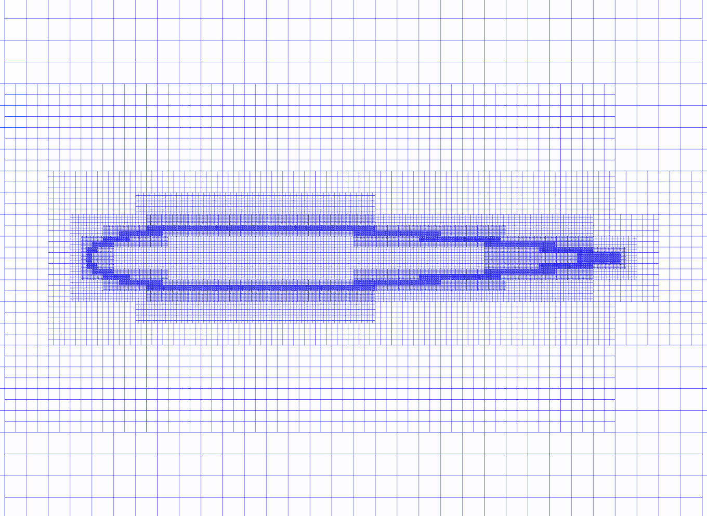
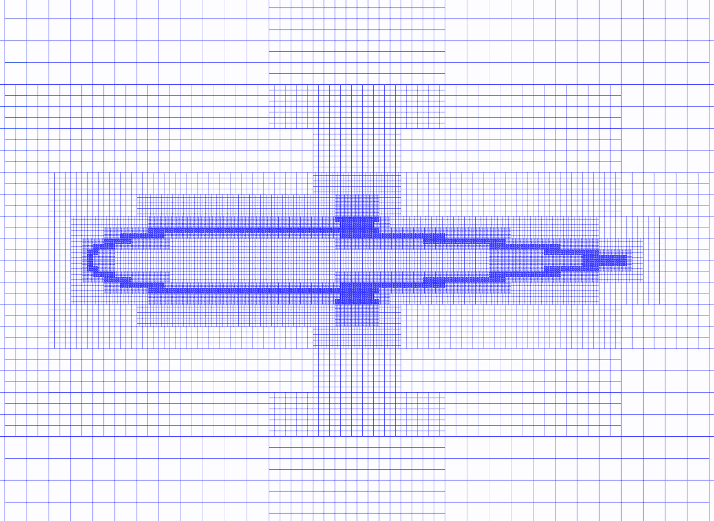

This tutorial demonstrates how to generate a set of structured Cartesian grids derived from an octree and adapt it with respect to a sensor field.
|
 Generated Octree mesh. |
 Adapted Octree mesh. |
The generation is in two steps: we first generate a unstructured
octree using G.octree, then it is filled with structured Cartesian grids using
G.octree2Struct.
In the example, we define a model sensor field on the set of Cartesian grids. To adapt the set of Cartesian grids with respect to the sensor,
we first project it on the corresponding unstructured octree
and convert it to an indicator field with P.computeIndicatorValue.
Then the unstructured octree is adapted using G.adaptOctree. The adapted set of grids
is the generated using again G.octree2Struct.
[Download python script].